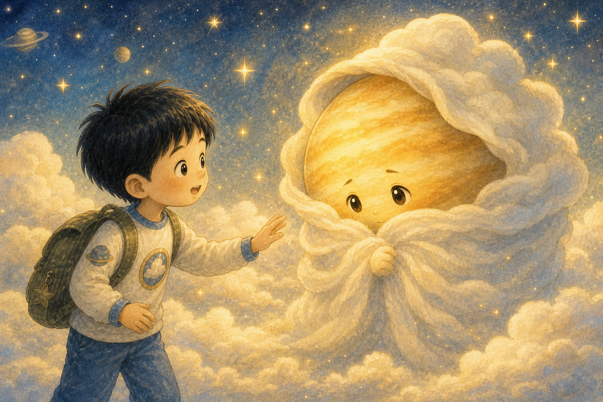
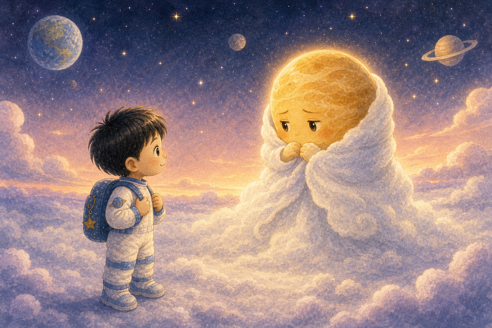
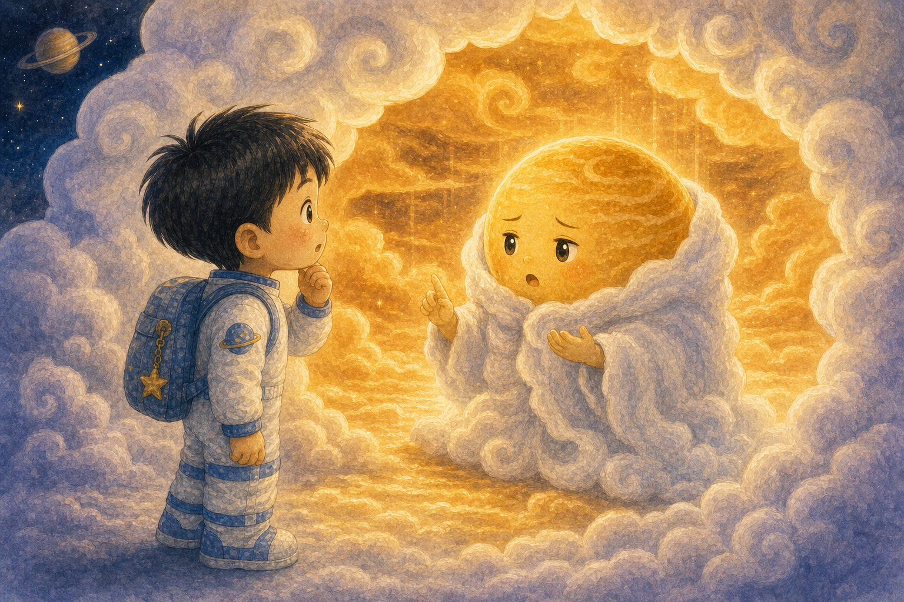
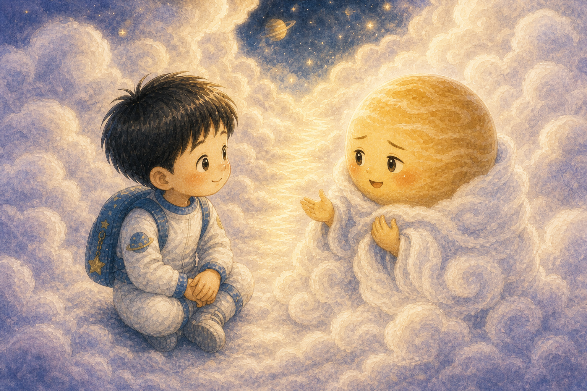
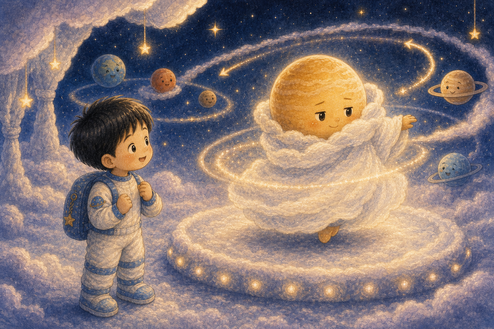
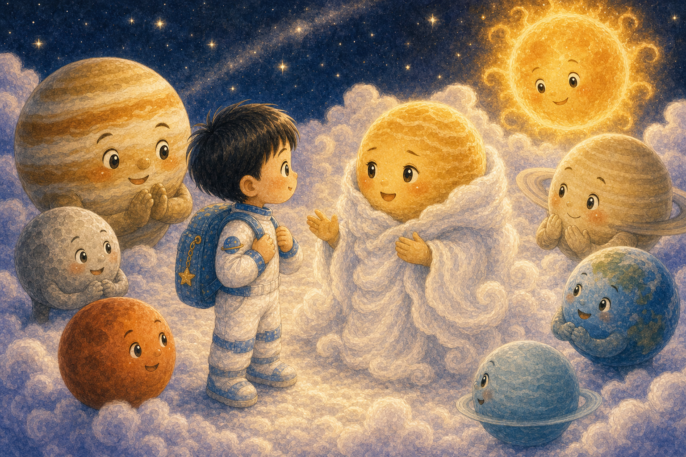
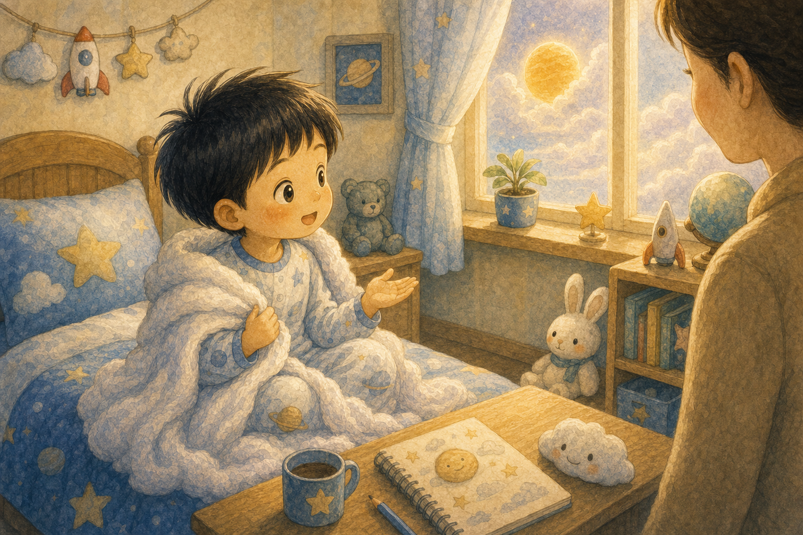

하얀 망토의 친구
하늘이는 새하얀 구름 망토를 두른 금성을 만났어요. 금성은 밝게 빛났지만 조금 조용해 보였지요.
"나는 잘 보이지만, 내 마음은 잘 안 보일 거야."

하늘이는 새하얀 구름 망토를 두른 금성을 만났어요. 금성은 밝게 빛났지만 조금 조용해 보였지요.
"나는 잘 보이지만, 내 마음은 잘 안 보일 거야."

금성은 새벽 하늘에서 아주 밝게 빛났어요. 하늘이는 "정말 예쁘다"라고 말했지만 금성은 살짝 고개를 숙였답니다.
칭찬을 받아도 마음이 복잡할 때가 있어요.
하늘이는 구름 망토 가까이 다가갔어요. 구름은 너무 두꺼워서 안쪽을 쉽게 볼 수 없었지요.
모르는 마음은 억지로 열 수 없어요.

금성은 조심히 말했어요. "내 안은 아주 뜨거워. 그래서 아무도 오래 머물기 어려워." 하늘이는 고개를 끄덕였답니다.
겉으로 밝아도 속은 힘들 수 있어요.

하늘이는 금성의 말을 끊지 않고 들었어요. 금성의 구름이 조금씩 부드러워지며 작은 빛길을 만들었지요.
잘 들어 주는 마음은 구름을 가볍게 해요.

금성은 다른 친구들과 조금 다른 방향으로 천천히 돌았어요. 하늘이는 "다르게 도는 인사도 멋져"라고 말했답니다.
다르게 가도 틀린 게 아니에요.
하늘이는 구름 위에 작은 하트 그림을 그렸어요. 금성은 처음으로 망토 끝을 살짝 흔들며 웃었지요.
작은 표현도 마음을 전할 수 있어요.

금성은 태양계 친구들에게 자기 이야기를 들려주었어요. "나는 밝고 뜨겁고, 조금 부끄러운 친구야."
진짜 모습을 말하자 마음이 가벼워졌어요.
그날 저녁 금성은 하늘에서 더 부드럽게 빛났어요. 하늘이는 금성의 빛이 예쁘기만 한 것이 아니라 용감하다고 느꼈답니다.
용기는 마음을 보여 주는 데서 시작돼요.

아침에 깬 하늘이는 자기 마음도 말해 보기로 했어요. 부끄러운 날에는 "나 지금 조금 뜨거운 마음이야"라고요.
금성은 하늘이에게 마음을 말하는 법을 알려 주었답니다.